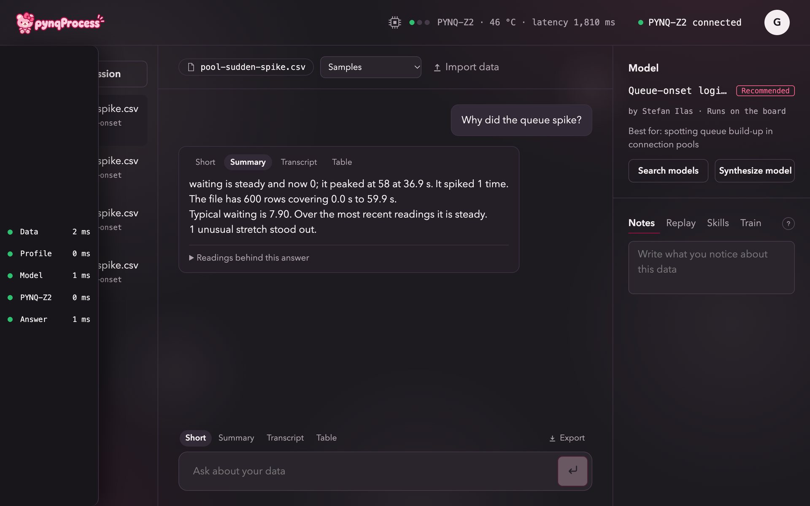

PYNQProcess
Did the queue clear, or are requests still waiting? Open a recording on your Mac and ask your PYNQ-Z2. The board answers with readings from the file.

the hot path
one question,
five stops.
how it works
five steps,
no manual.
Connect and import
Press Find boards. Once the PYNQ-Z2 shows up, import a CSV or JSON lines file, or pick one of 14 samples.

Pick a model
A recommended quantized model is applied when the data loads. Search the library by task, maker and size, or synthesize your own.

Ask
Type or dictate a question. Short arrives first, then Summary, Final, Transcript and Table. Every answer shows the readings behind it.
Watch the hot path
The strip on the left edge shows Data, Profile, Model, PYNQ-Z2 and Answer, each with its time in ms.

Teach it
Named edits change one INT8 row of a checkpoint. The board stores, verifies, switches and rolls them back exactly.

under the hood
what runs where.
Swift127.0.0.1:53530FLAN-T5-smallINT8research · queue history v2
On the test bench.
We asked one physical PYNQ-Z2 the same question on three recorded queues. The board kept scoring live data while it answered.
| Recorded queue | First words | Full answer |
|---|---|---|
| Cleared after peaking at 12 | 9,780 ms | 17,570 ms |
| Grew to 19 waiting | 9,340 ms | 18,160 ms |
| Stayed at zero | 9,380 ms | 18,130 ms |
On the board
- Answers about a queue CSV or the live feed are generated on the PYNQ-Z2.
- The kit keeps its own rolling history and scores new windows with the Mac closed.
- Board uploads, staged answers, follow-ups and model synthesis run on the board.
- Weight edits are stored, verified and rolled back exactly.
On your Mac
- Imported files are profiled here. Transcript and Table come from plain statistics.
- The model pick is a rule-based guess from column names and types.
- The board's built-in SQLite workload is generated traffic, marked Simulated.
- History, notes, export and the model library stay local.
take it home.
One zip. Unzip it, open it, find your board.
If macOS won't open it, go to System Settings, Privacy & Security and press Open Anyway.